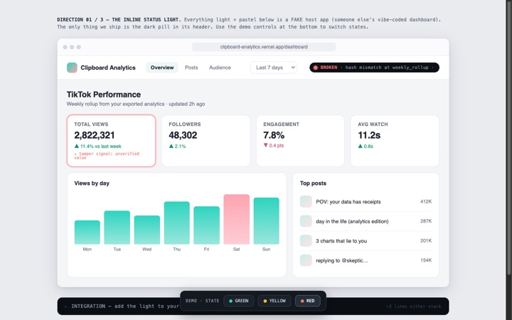

explore
Go deeper
LIVE PAGES

The light & the badge
Standalone demo pages for the inline status light and the verification badge, all three verdicts side by side against real chains.
light.html / badge.html →DESIGN DIRECTIONS

The working mockups
Three interface tiers: the inline light (shipped), the verification console, and the Data tab. Live HTML, with the design notes alongside.
designs/ →THE STORY

Your vibe-coded dashboard needs receipts
The blog post: why AI-written pipelines fail silently, and what a receipt chain catches that a plausible-looking chart never will.
read the post →